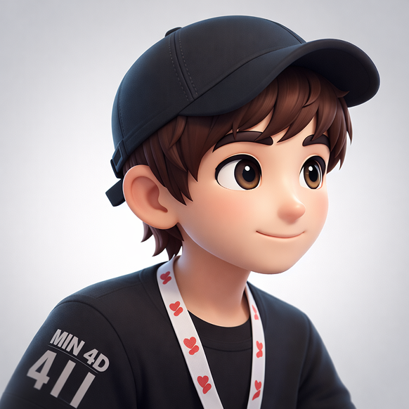

色彩系统
背景层级
#000000
#1A1A1A
#1F1F1F
#252525
rgba(255,255,255,
0.05)
rgba(255,255,255,
0.08)
文字色阶
#FFFFFF
#CCCCCC
#AAAAAA
#888888
#555555
强调色（Accent）
#FF6B6B
#FF8A80
#FFAB40
#FF7043
#C9A962
#c084fc
语义色 — 时代标签（Era Tags）
#66BB6A
#FF8A80
#FFAB40
#3498DB
#1ABC9C
#9B59B6
页面变量别名（与实现对齐）
| 本规范 | index / dist | people-magazine |
|---|---|---|
| --bg-base | --bg-color | --bg-canvas |
| --bg-surface-1 | — | --bg-surface |
| --accent-coral | --accent-primary | --accent-gold |
| --accent-coral-2 | --accent-secondary | --accent-gold-light |
| — | — | --border-light #333 / --border-medium #444 |
标题渐变 — Shimmer
background-size: 200% auto
animation: shimmer 4s linear infinite (background-position -200% → 200%)
字体系统
字体族
| 用途 | 字体栈 | 字重 |
|---|---|---|
| 标题 / 衬线 | Playfair Display, Noto Serif SC, Georgia, serif |
400, 500, 600, 700 (含 italic) |
| 正文 / 无衬线 | Inter, Noto Sans SC, -apple-system, sans-serif |
300, 400, 500, 600 |
| 展示 / 金句卡片 | Poppins, sans-serif |
300–700 · italic 用于 quote-card-text |
字阶展示
字阶规格表
| 层级 | 字号 | 字重 | 行高 | 字间距 | 字体族 |
|---|---|---|---|---|---|
| Display | 5rem / 80px | 700 | 1.1 | -0.02em | Serif |
| H1 | 2rem / 32px | 600 | 1.3 | — | Serif |
| H2 | 1.5rem / 24px | 600 | 1.4 | — | Serif |
| H3 | 1rem / 16px | 600 | 1.5 | 0.08em | Sans |
| Body | 16px | 400 | 1.7 | — | Sans |
| Body Serif | 1.2rem / 19px | 400 italic | 1.9 | — | Serif |
| Caption | 12px | 400 | 1.6 | — | Sans |
| Label / Eyebrow | 10–11px | 500–600 | — | 0.12em | Sans |
| Person Name | 20px | 500 | — | — | Serif |
| Timeline Quote | 14px | 400 | 22px | — | Sans |
| Quote Card Text | 14px | 400 italic | 28px | — | Poppins |
| Encounter Content | 14px | 400 | 1.8 | — | Sans |
| Search Input | 15–16px | 400 | — | — | Sans |
间距系统
间距标尺（4pt Grid）
页面级间距
| 用途 | 值 |
|---|---|
| Section 纵向内边距 | --space-2xl (76px) --space-md (24px)（桌面） |
| 内容最大宽度 | 1200px |
| 页面横向边距 | --space-md (24px)（桌面）/ --space-sm (12px)（移动） |
| 卡片内边距 | --space-md (24px) |
| Tab 内边距 | --space-sm (12px) --space-md (24px) |
| 搜索框高度 | 56px（固定尺寸，非间距 token） |
圆角系统
图标系统
Google Material Symbols Rounded
使用可变字体，支持 FILL、wght、GRAD、opsz 四个轴的调节。与设计系统 v3.0 杂志画报风保持一致。
尺寸变体
.icon-sm · 18px
.icon-md · 24px
.icon-lg · 32px
.icon-xl · 48px
filled 变体: .icon-filled → FILL 1
玻璃层级（Glass Morphism）
border: 0.08
blur: —
border: 0.10
blur: blur(20px)
border: 0.15
blur: blur(20px)
border: 0.10
blur: blur(24px)
blur(10px) saturate(180%)，hover 加深至 blur(15px) saturate(200%)；弹层/搜索 blur(20px~24px)。需同步添加 -webkit-backdrop-filter 以兼容 Safari。组件规范
时代标签（Era Tags）
padding: 4px 10px
radius: --radius-pill
背景: accent-color rgba(…, 0.15) · 文字: accent-color 100%
前缀: 6px 圆点，color: currentColor
时间线卡片（Timeline Card）
在繁荣中诞生
斯蒂芬·茨威格出生于维也纳一个富裕的犹太资产阶级家庭，彼时的奥匈帝国正处于相对和平稳定的黄金时代。
border: 1px solid rgba(255,255,255, 0.1) → hover: 0.3
radius: --radius-md (12px)
padding: 1.5rem
title: Playfair Display 16px, line-height 22px
timeline-quote: Inter 14px, line-height 22px
hover transform: translateY(-4px)
transition: all 300ms ease
金句卡片（Quote Card）
「每一个时代都相信自己是人类历史上最重要的时代，每一个时代也都是对的。」
backdrop-filter: blur(20px) saturate(180%)
border: 1px solid rgba(255,255,255, 0.1)
radius: --radius-xl (24px)
padding: 2rem
text-align: center
body font: Poppins italic 14px, line-height 28px（与页面实现一致）
思考卡片（Thought Card）
安全感是十九世纪欧洲人最大的财富，也是他们最大的盲点。
border: 1px solid rgba(255,255,255, 0.1) · hover: 0.3
radius: 24px
thought-original: flex, padding --space-md, min-height 80px, ::after 底部分隔线 #2b2b2b
thought-original-line: 4px × 28px, 左侧竖条, 颜色按 nth-child 轮换
thought-original-text: Playfair italic 600, 16px, line-height 22px, ::before/after 引号
thought-text: Inter 16px, line-height 24px, color rgba(255,255,255,0.7)
thought-topic: 12px, 圆角标签, 红底
hover: translateY(-4px) + box-shadow
搜索框（Search Box）
radius: --radius-pill
background: rgba(255,255,255, 0.05) → focus: 0.08
border: 1.5px, 动态 glow 动画 6s（紫色 ↔ 靛蓝色）
padding: 0 20px 0 52px（为图标留位）
font: Inter 15–16px
下拉层: radius 20px 底角, blur(24px), max-height 480px
功能标签栏（Feature Tabs）
- 📅 时间线
- 💬 金句
- 💡 思考
- 👤 人物
inactive color: --text-muted
active color: --text-primary
indicator: 2px height, --accent-coral, border-radius 1px
indicator transition: left + width, 0.3s cubic-bezier(0, 0, 0.2, 1)
tab border-bottom: 1px solid --border-subtle
人物走马灯卡片（Carousel Card）


radius: 8px
default transform: perspective(1000px) rotateY(-45deg)
hover transform: rotateY(0deg) scale(1.03)
filter: grayscale(20%) contrast(1.05) → hover: grayscale(0%)
image mask: linear-gradient(black 70%, transparent 100%)
transition: all 300ms cubic-bezier(0.4, 0, 0.2, 1)
eyebrow: 10px, --accent-gold, uppercase, letter-spacing 0.12em
name: Playfair Display 20px, color #1A1A1A
animation: scroll-left, 60s linear infinite
书籍侧边栏（Book Drawer）
background: rgba(10,10,10, 0.98) + blur(30px)
width: 40vw（最小 360px）
进入动画: translateX(100%) → 0, opacity 0→1, 0.35s ease
关闭动画: content slide-up (-windowHeight), opacity 0, 0.4s ease-in + backdrop 0.3s delay 0.1s
高亮: 相关段落 outline 2000ms 后自动消失
动效系统
时间曲线（Easing）
| Token | 值 | 适用场景 |
|---|---|---|
| --ease-default | cubic-bezier(0.4, 0, 0.2, 1) | 卡片 hover、通用过渡 |
| --ease-out | cubic-bezier(0, 0, 0.2, 1) | Tab indicator、内容面板 |
| Apple Smooth | Math.min(1, 1.001 - 2^(-10t)) | Lenis 平滑滚动 |
| power2.out | GSAP ease | ScrollTrigger 进场动画 |
时长（Duration）
| Token | 值 | 适用场景 |
|---|---|---|
| --dur-fast | 150ms | 微交互、颜色切换 |
| --dur-base | 300ms | 卡片 hover、Tab 切换 |
| --dur-slow | 500ms | 内容面板淡入淡出 |
| Modal Close | 400ms | 侧边栏关闭 |
| Scroll Anim | 1.2s | GSAP ScrollTrigger 进场 |
| Carousel Loop | 60s | 人物走马灯无限滚动 |
| Border Glow | 6s | 搜索框边框光晕循环 |
| Shimmer | 4s | 标题渐变闪烁 |
关键动画一览
| 动画名称 | 属性变化 | 触发方式 |
|---|---|---|
| 页面进场 | opacity 0→1, scale 0.95→1, y 20→0 | ScrollTrigger |
| 卡片悬停 | translateY(-4px) + background 加深 | :hover |
| 走马灯翻转 | rotateY(-45deg) → 0deg, 0.7s | :hover |
| Tab 指示器 | translateX + width, 0.3s | click |
| 内容面板切换 | opacity 0→1, y 20→0, 0.5s | Tab click |
| 搜索下拉框 | opacity + translateY, 0.22s | focus / input |
| 标题 Shimmer | background-position -200%→200% | 持续播放 |
| 搜索框光晕 | border-color + box-shadow 循环 | 持续播放 |
| Blob 光斑 | opacity 0.4→0.6, scale 1→1.05 | 持续播放 4.5–5.5s |
| Lenis 滚动 | smooth scroll, duration 1.2s | wheel / touch |
will-change: transform 或 transform: translateZ(0) 以启用 GPU 加速，避免 Layout 回流。页面布局
Section 分层结构
主内容区（Section 3）列布局
(时间线 / 金句 / 思考)
响应式断点
| 断点 | 值 | 变化 |
|---|---|---|
| Desktop | > 1200px | 多列布局，完整动画，水平走马灯 |
| Tablet | 768px – 1200px | 调整间距，弹性栅格 |
| Mobile | < 768px | 垂直堆叠，简化动画，触摸优化 |
设计原则
纯黑背景（#000000）为基础，通过透明度叠加而非灰阶变化构建层级。不同层级的区分靠 rgba 白色透明度（0.03 → 0.05 → 0.08）实现，营造克制而精致的深度感。
Playfair Display 承载历史感与文学气息（标题、金句、人名），Inter / Noto Sans SC 处理功能性信息（正文、UI 标签、搜索）。两种字体族形成感性与理性的对话。
所有浮层、卡片、搜索框使用 backdrop-filter: blur + 低透明度白色背景，而非不透明填充。这使内容在不同层级之间形成朦胧的通透感，呼应了书中"昨日世界"消逝的主题。
动画不是装饰——走马灯的 rotateY 暗示时间的流逝；卡片的 translateY(-4px) 表达可交互性；shimmer 渐变赋予标题生命力。每一个动效都服务于叙事或引导注意力。
在黑色背景下，珊瑚红（#FF6B6B）、琥珀（#FFAB40）、金色（#C9A962）作为强调色，既传递历史的暖意，也呼应了战前欧洲的繁盛与其后的危机感。紫色渐变作为现代感的补充，平衡整体氛围。
时间线、金句、思考三类内容有各自专属的卡片形态，而非通用模板。语义色（绿/橙/红）直接映射历史时期，让用户无需阅读标签就能感知时代氛围。设计服务于内容理解，而非反其道而行之。
技术栈 & 依赖
| 库 / 技术 | 版本 | 用途 |
|---|---|---|
| GSAP + ScrollTrigger | 3.x | 滚动进场动画、视差效果 |
| Lenis | latest | 平滑惯性滚动（Apple 曲线） |
| Fuse.js | 6.x | 前端模糊搜索 |
| Material Icons | Google CDN | 功能图标（timeline、lightbulb 等） |
| Google Fonts | — | Playfair Display / Inter / Noto 字体 |
| 纯 CSS + Vanilla JS | — | 无框架，零构建工具 |

这种安全感并非来自个人的坚韧，而是制度与秩序编织的幻觉。茨威格的反思提醒我们，文明的脆弱程度远超我们的想象。